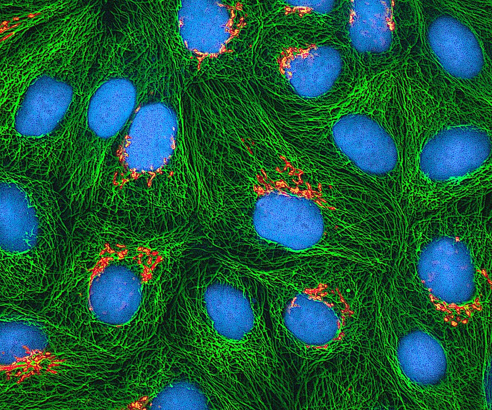

FILE A42-HM-003 // HEALTH & MEDICINE
Henrietta Lacks and HeLa Cells
ASSESSMENT: Nonconsensual tissue use documented; broader claims need proof.


The claim and its context
Henrietta Lacks’s cervical tumor cells were collected at Johns Hopkins in 1951 without her knowledge or consent and became the HeLa cell line. The nonconsensual collection is documented. Claims that these cells were secretly used to harm patients or control populations require evidence beyond their extraordinary scientific use.
HeLa cells were shared widely and contributed to research, including vaccine development. Lacks was a Black patient treated in an era with weak consent protections. Her family learned of the cells years later; concerns about genome publication led NIH to establish controlled data access with family participation.
What is documented
The ethical issues include consent, unequal power, privacy, and commercial benefit without family participation. These are well-grounded criticisms. Laboratory use does not itself show that a treatment derived from research is unsafe or malicious.
Clinical and epidemiological evidence
HeLa is a transformed cell line, not a representative model of every human tissue. Experimental findings need validation in other systems and clinical studies. This limitation is a scientific issue, not evidence of a hidden contagion or deliberate cancer-causing scheme.
Contrary evidence and genuine uncertainty
Tissue ownership and consent laws evolved unevenly. The California Moore case is a different legal dispute and must not be conflated with Lacks’s history. Some details of 1951 clinical discussions are limited by records, while lack of consent is accepted in historical accounts.
Calibrated assessment
The record shows ethical failure alongside immense scientific utility; neither cancels the other. Claims that HeLa proves a present population-control project leap beyond evidence. Consent, privacy, and benefit-sharing remain legitimate policy questions.
A responsible evidence test
Trace a claimed harm to a specific experiment, exposure, and outcome study rather than relying on the cell line’s widespread use. Compare family histories, legal records, and NIH policy. Personal care decisions belong with a qualified clinician.
Source notes and limitations
- NIH — HeLa cell whole-genome sequence data policy, NOT-OD-24-098Documents later data governance, not every 1951 consent detail.
- Johns Hopkins Medicine — Henrietta LacksInstitutional account; compare with independent histories.
- NIH — Lacks family reach understanding to share HeLa genomic dataSpecific agreement on later genomic data access; not a ruling on the original collection.